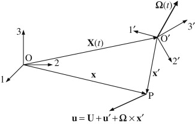

Substituting \(\left( \frac{D\mathbf{u}}{Dt} \right)_{O123} = \left( \frac{D'\mathbf{u}'}{Dt} \right)_{O'1'2'3'} + \frac{d\mathbf{U}}{dt} + 2\boldsymbol{\Omega} \times \mathbf{u}' + \frac{d\boldsymbol{\Omega}}{dt} \times \mathbf{x}' + \boldsymbol{\Omega} \times (\boldsymbol{\Omega} \times \mathbf{x}')\) into \(\boxed{\rho \frac{D\mathbf{u}}{Dt} = -\nabla p + \rho \mathbf{g} + \mu \nabla^2 \mathbf{u} \quad \text{(incompressible)}}\) produces \[ \rho \left( \frac{D'\mathbf{u}'}{Dt} \right)_{O'1'2'3'} = -\nabla' p + \rho \left[ \mathbf{g} - \frac{d\mathbf{U}}{dt} - 2\boldsymbol{\Omega} \times \mathbf{u}' - \frac{d\boldsymbol{\Omega}}{dt} \times \mathbf{x}' - \boldsymbol{\Omega} \times (\boldsymbol{\Omega} \times \mathbf{x}') \right] + \mu \nabla'^2 \mathbf{u}' \]
The equation above makes it clear that the primary effect of a noninertial frame is the addition of extra body force terms that arise from the motion of the noninertial frame. The terms \(\boxed{\mathbf{g} - \frac{d\mathbf{U}}{dt} - 2\boldsymbol{\Omega} \times \mathbf{u}' - \frac{d\boldsymbol{\Omega}}{dt} \times \mathbf{x}' - \boldsymbol{\Omega} \times (\boldsymbol{\Omega} \times \mathbf{x}')}\) reduce to \(\mathbf{g}\) alone when \(O'1'2'3'\) is an inertial frame \(\mathbf{U}\) = constant and \(\boldsymbol{\Omega} = 0\))
